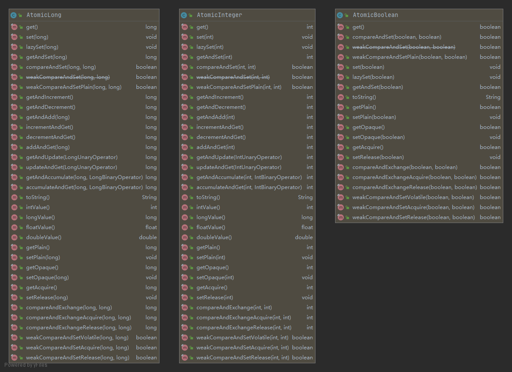
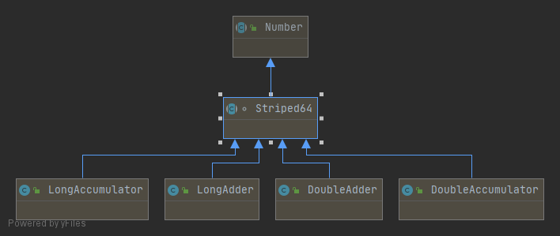

在JDK1.5之后，JDK的（concurrent包）并发包里提供了一些类来支持原子操作，如AtomicBoolean,AtomicInteger,AtomicLong都是用原子的方式来更新指定类型的值
结构 基本类型 AtomicInteger、AtomicLong、AtomicBoolean
主要利用 CAS (compare and swap) + volatile 和 native 方法来保证原子操作，从而避免 synchronized 的高开销，执行效率大为提升

常用方法 这三个类提供的方法几乎一样，AtomicBoolean少一些，因为boolean值就两个值，所以就是来回改，相对的很多增加减少的方法自然就没有了
1 2 3 4 5 6 7 8 9 10 11 12 13 14 15 16 17 18 19 20 21 22 23 /** * AtomicInteger常见的方法列表 * @see AtomicInteger#get() 直接返回值 * @see AtomicInteger#getAndAdd(int) 增加指定的数据，返回变化前的数据 * @see AtomicInteger#getAndDecrement() 减少1，返回减少前的数据 * @see AtomicInteger#getAndIncrement() 增加1，返回增加前的数据 * @see AtomicInteger#getAndSet(int) 设置指定的数据，返回设置前的数据 * * @see AtomicInteger#addAndGet(int) 增加指定的数据后返回增加后的数据 * @see AtomicInteger#decrementAndGet() 减少1，返回减少后的值 * @see AtomicInteger#incrementAndGet() 增加1，返回增加后的值 * @see AtomicInteger#lazySet(int) 仅仅当get时才会set * * @see AtomicInteger#compareAndSet(int, int) 尝试新增后对比，若增加成功则返回true否则返回false */ /** * AtomicBoolean主要方法： * @see AtomicBoolean#compareAndSet(boolean, boolean) 第一个参数为原始值，第二个参数为要修改的新值，若修改成功则返回true，否则返回false * @see AtomicBoolean#getAndSet(boolean) 尝试设置新的boolean值，直到成功为止，返回设置前的数据 */
示例 计数
1 2 3 4 5 6 7 8 9 10 11 12 13 14 15 16 17 18 19 20 21 22 23 24 25 26 27 28 29 30 31 32 33 34 35 36 37 38 39 40 41 42 43 44 45 46 47 48 49 50 51 52 53 public class AtomicIntegerTest private AtomicInteger count = new AtomicInteger(); public void increment () count.incrementAndGet(); } public int getCount () return count.get(); } public static void main (String[] args) throws InterruptedException LocalDateTime startTime = LocalDateTime.now(); AtomicIntegerTest atomicIntegerTest = new AtomicIntegerTest(); ExecutorService executorService = Executors.newCachedThreadPool(); for (int i = 0 ; i < 100000 ; i++) { executorService.execute(() -> { atomicIntegerTest.increment(); }); } executorService.shutdown(); while (!executorService.awaitTermination(1 , TimeUnit.MINUTES)) { } System.out.println("count: " + atomicIntegerTest.getCount() + "花费: " + ChronoUnit.MILLIS.between(startTime, LocalDateTime.now()) + "毫秒" ); } }
若干线程，只有一个线程修改状态成功
1 2 3 4 5 6 7 8 9 10 11 12 13 14 15 16 17 18 19 20 21 22 23 public class AtomicBooleanTest public final static AtomicBoolean TEST_BOOLEAN = new AtomicBoolean(); public static void main (String[] args) ExecutorService executorService = Executors.newFixedThreadPool(10 ); for (int i = 0 ; i < 10 ; i++) { executorService.execute((() -> { try { TimeUnit.SECONDS.sleep(2 ); } catch (InterruptedException e) { e.printStackTrace(); } if (TEST_BOOLEAN.compareAndSet(false , true )) { System.out.println("我成功了！" ); } else { System.err.println("我没有成功！已经被修改过了" ); } })); } executorService.shutdown(); } }
引用类型 AtomicReference、AtomicStampedReference、AtomicMarkableReference
AtomicReference 用于原子地更新某个引用,只提供操作保证某个引用的更新会被原子化,常用封装某个引用会被多个线程频繁更新的场景,保证线程安全性
1 2 3 4 5 6 7 8 9 10 11 12 13 14 15 16 17 18 19 20 21 22 23 24 25 26 27 28 public class AtomicReferenceTest public final static AtomicReference<String> ATOMIC_REFERENCE = new AtomicReference<String>("abc" ); public static void main (String[] args) ExecutorService executorService = Executors.newFixedThreadPool(10 ); for (int i = 0 ; i < 100 ; i++) { final int num = i; executorService.execute(() -> { try { Thread.sleep(Math.abs((int ) (Math.random() * 100 ))); } catch (InterruptedException e) { e.printStackTrace(); } if (ATOMIC_REFERENCE.compareAndSet("abc" , new String("abc" ))) { System.out.println("我是线程：" + num + ",我获得了锁进行了对象修改！" ); } }); } executorService.shutdown(); } }
AtomicStampedReference AtomicStampedReference是为了解决ABA问题
ABA：当某些流程在处理过程中是顺向的，也就是不允许重复处理的情况下，在某些情况下导致一个数据由A变成B，再中间可能经过0-N个环节后变成了A，此时A不允许再变成B了，因为此时的状态已经发生了改变，例如：银行资金里面做一批账目操作，要求资金在80-100元的人，增加20元钱，时间持续一天，也就是后台程序会不断扫描这些用户的资金是否是在这个范围，但是要求增加过的人就不能再增加了，如果增加20后，被人取出10元继续在这个范围，那么就可以无限套现出来，就是ABA问题了，类似的还有抢红包或中奖，比如每天每个人限量3个红包，中那个等级的奖的个数等等。
示例 模拟ABA问题
1 2 3 4 5 6 7 8 9 10 11 12 13 14 15 16 17 18 19 20 21 22 23 24 25 26 27 28 29 30 31 32 33 34 35 36 37 38 39 40 41 42 43 44 45 public class AtomicStampedReference public static AtomicInteger atomicInteger = new AtomicInteger(1 ); public static void main (String[] args) Thread main = new Thread(() -> { int value = atomicInteger.get(); System.err.println(Thread.currentThread().getName() + "获取值: " + value); try { TimeUnit.SECONDS.sleep(3 ); } catch (InterruptedException e) { e.printStackTrace(); } boolean isCASSuccess = atomicInteger.compareAndSet(value, 3 ); if (isCASSuccess) { System.err.println(Thread.currentThread().getName() + ">>更新成功" ); } else { System.err.println(Thread.currentThread().getName() + ">>更新失败" ); } },"主操作线程" ); Thread other = new Thread(() -> { int value = atomicInteger.get(); System.out.println(Thread.currentThread().getName() + "获取值: " + value); if (atomicInteger.compareAndSet(value, 2 )) { System.out.println(Thread.currentThread().getName() + "从 " + value + "更新为 2" ); value = atomicInteger.get(); System.out.println(Thread.currentThread().getName() + "获取新值: " + value); if (atomicInteger.compareAndSet(value, 1 )) { System.out.println(Thread.currentThread().getName() + "从 " + value + "更新为 1" ); } } },"干扰线程" ); main.start(); other.start(); } }
使用AtomicStampedReference解决ABA问题, 内部使用Pair来存储元素值及其版本号
1 2 3 4 5 6 7 8 9 10 11 12 13 14 15 16 17 18 19 20 21 22 23 24 25 26 27 28 29 30 31 32 33 34 35 36 37 38 39 40 41 42 43 44 45 46 47 48 public class AtomicStampedReferenceTest public static AtomicStampedReference<Integer> atomicInteger = new AtomicStampedReference(1 , 0 ); public static void main (String[] args) Thread main = new Thread(() -> { int value = atomicInteger.getReference(); int stamp = atomicInteger.getStamp(); System.err.println(Thread.currentThread().getName() + "获取值: " + value + " 版本为: " + stamp); try { TimeUnit.SECONDS.sleep(3 ); } catch (InterruptedException e) { e.printStackTrace(); } boolean isCASSuccess = atomicInteger.compareAndSet(value, 3 , stamp, stamp + 1 ); if (isCASSuccess) { System.err.println(Thread.currentThread().getName() + ">>更新成功" ); } else { System.err.println(Thread.currentThread().getName() + ">>更新失败, 版本为： " + atomicInteger.getStamp()); } },"主操作线程" ); Thread other = new Thread(() -> { int value = atomicInteger.getReference(); System.out.println(Thread.currentThread().getName() + "获取值: " + value); int stamp = atomicInteger.getStamp(); if (atomicInteger.compareAndSet(value, 2 , stamp, stamp + 1 )) { System.out.println(Thread.currentThread().getName() + "从 " + value + "更新为 2" ); value = atomicInteger.getReference(); System.out.println(Thread.currentThread().getName() + "获取新值: " + value); stamp = atomicInteger.getStamp(); if (atomicInteger.compareAndSet(value, 1 , stamp, stamp + 1 )) { System.out.println(Thread.currentThread().getName() + "从 " + value + "更新为 1" ); } } },"干扰线程" ); main.start(); other.start(); } }
AtomicMarkableReference AtomicMarkableReference可以理解为上面AtomicStampedReference的简化版，就是不关心修改过几次，仅仅关心是否修改过。因此变量mark是boolean类型，仅记录值是否有过修改。
数组类型 AtomicIntegerArray、AtomicLongArray、AtomicReferenceArray
Atomic的数组要求不允许修改长度等，不像集合类那么丰富的操作，不过它可以让你的数组上每个元素的操作绝对安全的，也就是它细化的力度还是到数组上的元素，为你做了二次包装
AtomicIntegerArray 示例
100个线程并发，每10个线程会被并发修改数组中的一个元素，也就是数组中的每个元素会被10个线程并发修改访问，每次增加原始值的大小，此时运算完的结果看最后输出的敲好为原始值的11倍数，和我们预期的一致，如果不是线程安全那么这个值什么都有可能
1 2 3 4 5 6 7 8 9 10 11 12 13 14 15 16 17 18 19 20 21 22 23 24 25 26 27 28 29 30 31 32 33 34 35 36 public class AtomicIntegerArray private final static AtomicIntegerArray ATOMIC_INTEGER_ARRAY = new AtomicIntegerArray(new int []{1 ,2 ,3 ,4 ,5 ,6 ,7 ,8 ,9 ,10 }); public static void main (String []args) throws InterruptedException Thread []threads = new Thread[100 ]; for (int i = 0 ; i < 100 ; i++) { final int index = i % 10 ; final int threadNum = i; threads[i] = new Thread(() -> { int result = ATOMIC_INTEGER_ARRAY.addAndGet(index, index + 1 ); System.out.println("线程编号为：" + threadNum + " , 对应的原始值为：" + (index + 1 ) + "，增加后的结果为：" + result); }); threads[i].start(); } for (Thread thread : threads) { thread.join(); } System.out.println("=========================>\n执行已经完成，结果列表：" ); for (int i = 0 ; i < ATOMIC_INTEGER_ARRAY.length() ; i++) { System.out.println(ATOMIC_INTEGER_ARRAY.get(i)); } } }
AtomicLongArray AtomicLongArray其实和AtomicIntegerArray操作方法类似，最大区别就是它操作的数据类型是long
AtomicRerenceArray AtomicRerenceArray类似，只是它方法只有两个:
1 2 3 4 5 6 7 8 9 10 AtomicReferenceArray#compareAndSet(int, Object, Object) 参数1：数组下标； 参数2：修改原始值对比； 参数3：修改目标值 修改成功返回true，否则返回false AtomicReferenceArray#getAndSet(int, Object) 参数1：数组下标 参数2：修改的目标 修改成功为止，返回修改前的数据
属性原子修改器(Updater) AtomicIntegerFieldUpdater、AtomicLongFieldUpdater、AtomicReferenceFieldUpdater
外部的Updater可以对对象的属性本身的修改提供类似Atomic的操作，也就是它对这些普通的属性的操作是并发下安全的。它算是Atomic的系列的一个扩展，Atomic系列是为你定义好的一些对象，你可以使用，但是如果是别人已经在使用的对象会原先的代码需要修改为Atomic系列，此时若全部修改类型到对应的对象相信很麻烦，因为牵涉的代码会很多 ，此时java提供一个外部的Updater可以对对象的属性本身的修改提供类似Atomic的操作，也就是它对这些普通的属性的操作是并发下安全的。实现方式是通过反射找到属性，对属性进行操作，但是并不是设置accessable，所以必须是可见的属性才能操作
限制
限制1：操作的目标不能是static类型，前面说到unsafe的已经可以猜测到它提取的是非static类型的属性偏移量，如果是static类型在获取时如果没有使用对应的方法是会报错的，而这个Updater并没有使用对应的方法。
限制2：操作的目标不能是final类型的，因为final根本没法修改。
限制3：必须是volatile类型的数据，也就是数据本身是读一致的。
限制4：属性必须对当前的Updater所在的区域是可见的，也就是private如果不是当前类肯定是不可见的，protected如果不存在父子关系也是不可见的，default如果不是在同一个package下也是不可见的
AtomicIntegerFieldUpdater 示例
只有一个线程可以对数据进行修改
1 2 3 4 5 6 7 8 9 10 11 12 13 14 15 16 17 18 19 20 21 22 23 24 25 26 27 28 29 30 31 32 33 34 35 36 public class AtomicIntegerFieldUpdater static class A volatile int intValue = 100 ; } public final static AtomicIntegerFieldUpdater<A> ATOMIC_INTEGER_UPDATER = AtomicIntegerFieldUpdater.newUpdater(A.class, "intValue"); public static void main (String []args) final A a = new A(); for (int i = 0 ; i < 100 ; i++) { final int num = i; new Thread(() -> { if (ATOMIC_INTEGER_UPDATER.compareAndSet(a, 100 , 120 )) { System.out.println("我是线程：" + num + " 我对对应的值做了修改！" ); } }).start(); } } }
AtomicLongFieldUpdater AtomicLongFieldUpdater区别在于它所操作的数据是long类型
AtomicReferenceFieldUpdater AtomicReferenceFieldUpdater方法较少，主要是compareAndSet以及getAndSet两个方法的使用，它的定义比数字类型的多一个属性的类型，因为引用的是一个对象，对象本身也有一个类型：
1 2 3 4 5 static class A { volatile String stringValue = "abc"; } AtomicReferenceFieldUpdater <A ,String>ATOMIC_REFERENCE_FIELD_UPDATER = AtomicReferenceFieldUpdater.newUpdater(A.class, String.class, "stringValue");
java8新增-原子类型累加器 java8之后，又新增了DoubleAccumulator、DoubleAdder、LongAccumulator、LongAdder，这些类是对AtomicLong等类的改进(在某些场景下，注意并不是完全替代)，比如LongAccumulator与LongAdder在高并发环境下比AtomicLong更高效，代价是消耗更多的内存空间。

LongAdder 与AtomicLong相比，LongAdder更多地用于收集统计数据，而不是细粒度的同步控制。而且，LongAdder只提供了add(long)和decrement()方法，想要使用cas方法还是要选择AtomicLong。低并发、一般的业务场景下AtomicLong是足够了。如果并发量很多，存在大量写多读少的情况，那
LongAccumulator LongAccumulator是LongAdder的增强版。LongAdder只能针对数值的进行加减运算，而
LongAccumulator内部原理和LongAdder几乎完全一样，都是利用了父类Striped64的longAccumulate方法
DoubleAdder和DoubleAccumulator 从名字也可以看出，DoubleAdder和DoubleAccumulator用于操作double原始类型。